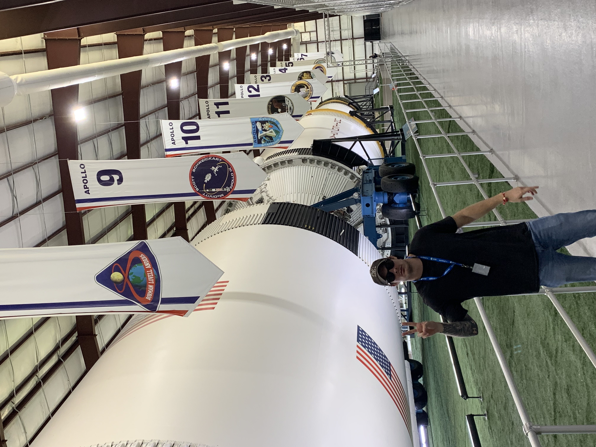

Kevin Williams — software engineer and AI researcher at NASA. I don't start with a technology. I start with a problem that matters.
Every project starts the same way. I see something broken, something hurting people, and I can't look away. The tools change. The reason never does.
I watched oxycontin tear through communities. When I got the chance to research at Michigan, I chose electrochemical THC detection — not because biosensing was trendy, but to build the scientific foundation for cannabis as a testable alternative to opioids. Give people a safer option and give society the tools to manage it.
Social media promised connection and optimized for addiction instead. I see AI at the same crossroads. That's why I moved into AI safety and certification at NASA — not to slow AI down, but to build frameworks that make AI on a spacecraft carrying humans actually earn the trust we place in it.
At NASA, teams wrestled with SharePoint workflows never designed for spaceflight complexity. Data was scattered, processes were manual. So I built Cortex — not because I love enterprise software, but because people doing the hardest work in aerospace deserved better tools.
